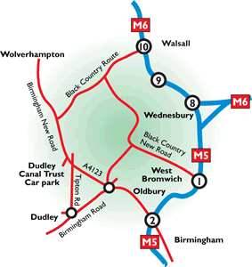

Saturday 29th
November Dudley Limestone Mines
Jes
says: We would like to advertise a trip to
Dudley limestone mines on the canal boat. Meet at the car park (off Birmingham
Road, Dudley) say 1.30 for 2.00 pm trip.
There
are other limestone activities if good weather, or a
canal tunnel walk. Back to our house for party evening Saturday 29th and a
relaxing walk on Cannock Chase on Sunday.
Dudley
Canal Tunnel is on the A4123 Birmingham New road, Dudley
3 miles from junction 2 of the M5, 6 miles from junction 10 of the M6

Location of
Afterwards- walk through one of the longer canal tunnels- Netherton Tunnel.
There is also the famous
Back to Walsall for supper
Jes
Contact
Jes and Gill on: 01922 693488
12 Watermeadow Drive, Shelfield
Walsall WS4 1TA
Sunday 7th
December Mountain biking round Skiddaw
Meet
at the railway station car park in Keswick at 10 o’clock. You need a mountain
bike, but you don’t need to be super-fit.
Contact
Anne and Ken on: 01200 425841
Weekend 10th – 11th
January Trough of Bowland
Come
for a walk in the Trough of Bowland on Saturday,
followed by food and fun at Anne and Ken’s afterwards. More walking,
or a local bike ride on Sunday. First to ask gets the spare bed, plenty of
floor-space for any-one else!
Contact
Anne and Ken on: 01200 425841
Saturday 31st
January Orienteering
at Colomendy, near Mold
Orienteering
for all abilities, and walking in the Llewiddian
Hills.
Based
at Colomendy centre for outdoor education located at
Loggerheads on A494 Mold to Ruthin
road, 2 ½ miles
west of Mold (GR SJ199623)
Contact
Pete and Meg on: 01925 263507
Saturday 21st
February Mountain Biking
Venue to be decided nearer the time, but probably Lakes, since Richard
Morton has volunteered to coordinate. We might even make it a weekend in the Lakes, in
which case speak to Ken and Anne.
Phone
Richard on: 01900 825863
Anne
and Ken on: 01200 425841
Saturday 21st
March Fetch your kite to Crosby Dunes
There
is an orienteering event, which is well worth doing, but even if you don’t
fancy that, it’s a nice place for a walk and a great place to fly a kite and
have a picnic.
High
Town Dunes, near Crosby, about 10 am
Park
at Crosby coastguard station (GR SD 298004)
Phone
Pete and Meg for details (01925 263507)
Saturday 28th
March Coniston Fourteen
This
used to be a regular on the SLUGS calendar. Relive your lost youth, or find out
what you were missing all those years ago. Come for a fourteen mile run round
Lake Coniston.
YOU
WILL HAVE TO BOOK YOUR PLACE WELL IN ADVANCE
Accommodation for Saturday night at Rawhead
in Langdale. Let Ken and Anne know so they can reserve
some beds. (01200
425841)
Go
to: www.coniston14.co.uk Or just come for a
weekend in the Lakes.
Easter 10th -13th
April
We’re
away rock climbing in the South of France. If any-one wants arrange a Sluggy trip somewhere, we’ll circulate details!
Other Stuff:
There
is very likely to be a skiing trip
last week in January. Contact John Boardman. If he isn’t organizing it he’ll
tell you who is!
John: 07775 796270
We
haven’t planned a Scottish trip for
this winter – we thought we’d try and go at short notice when there’s some
proper winter weather forecast. Drop us a line if you’d like us to keep you in
the loop.
(01200 425841) daykin@talktalk.net
Tresviso 2010
Carolyn Ginnever
is coordinating a return visit . She says: I get the
impression that people are not thinking about the next Tresviso
holiday yet. Please ask them to think about:
a) If they are going
b) How many people and what sort of accommodation would they like
(camping, Youth hostel (IYH card required), Hotel/taberna)
c) Dates
Then that I can begin to get an idea of what
will be happening and be able to talk with the national park for the permissions
we need. Also, if anyone has any ideas on anything that might need preparing
beforehand then let me know. tresviso2010@orangemail.es